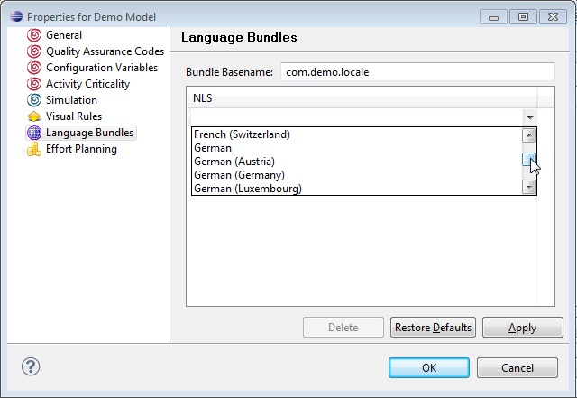
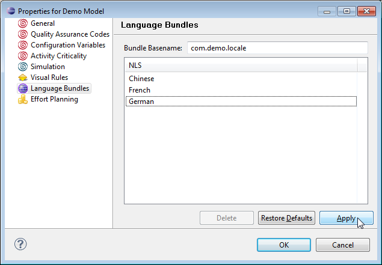
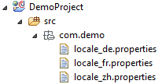
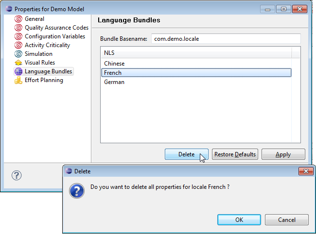
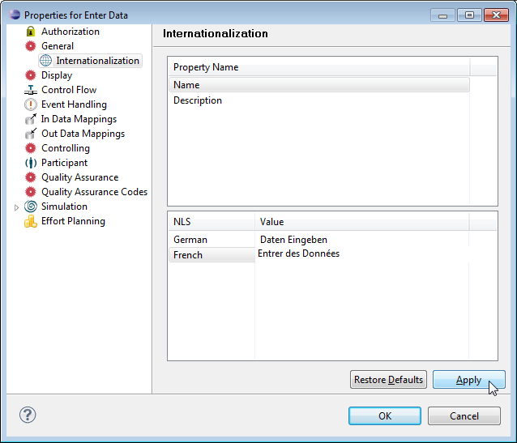
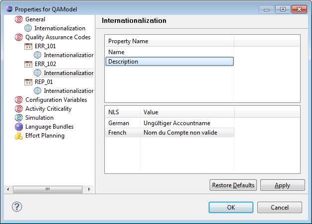
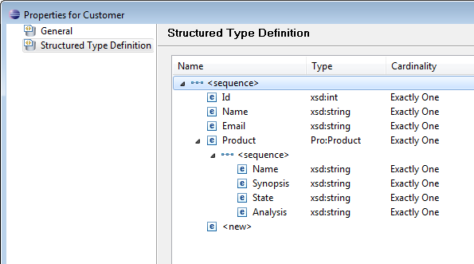
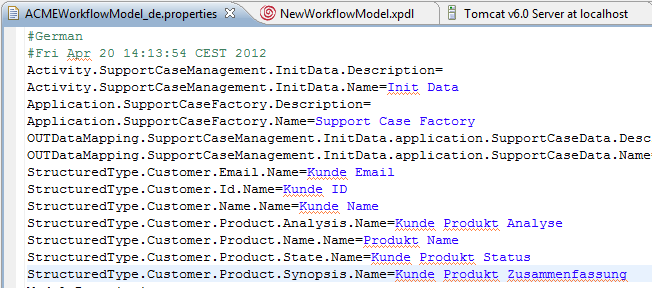
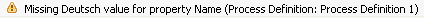

Internationalization of model information is provided via Java properties files in Native Language Support (NLS) - bundles. It is possible to internationalize names and descriptions of model objects. All localization information for one model will be contained within one NLS bundle.
Specification of internationalization information is supported for the names of the following model elements with the corresponding scope ID and the property names, which can be internationalized:
| Model Element | Scope ID | Property Name |
|---|---|---|
| Model | Model | Description, Name |
| Data | Data | Description, Name |
| Role | Role | Description, Name |
| Organization | Organization | Description, Name |
| Conditional Performer | CondPerformer | Description, Name |
| Application | Application | Description, Name |
| Process Definition | Process | Description, Name |
| Diagram | Diagram | Name |
| Activity | Activity | Description, Name |
| Trigger | Trigger | Description, Name |
| Data Path | DataPath | Name |
| Data Mapping | DataMapping | Name |
| Process Event Handler | ProcessEH | Description, Name |
| Activity Event Handler | ActivityEH | Description, Name |
| Quality Assurance Codes | QualityAssuranceCode | Description, Name |
The according entries in the language bundles apply to the following pattern:
<scope id>.<model element id>.Name= <scope id>.<model element id>.Description=
For example:
Process.SalesProcess.Name=Verkaufsprozess Process.SalesProcess.Description=Verkaufsprozess mit Dateneingabe
For specific entries like event handlers or quality assurance codes, the id of the specific entry is added as well, e.g.:
ProcessEH.SalesProcess.OnProcessStateChange.Name=\u00C4nderung Prozess Status QualityAssuranceCode.ValidationError.Description=Fehler beim Validieren QualityAssuranceCode.ValidationError.Name=ValidierungsFehler
For details on internationalizing Quality Assurance Codes refer to section Translating Quality Assurance Codes.
For the time being, internationalization of structured data is not provided. Section Internationalization of Structured Data Types describes how to provide translation of structured data types manually.
You can create language bundles in the properties page of the model. Make sure a source folder exists in your project to place the bundle. If no source folder is found, the following error message is shown on top of the dialog:
Figure: No Source Folder Error Message
In this case create one by selecting File > New > Source Folder.
To add locales to a model:

Figure: Properties Dialog Settings

Figure: List of Selected Locales
You find the properties files for your languages in the source folder of your project. Their name is created with the bundle basename and the appendix of the according locale, e.g.:

Figure: The Properties Files in the Source Folder
Please note that once you created a bundle, you cannot change the bundlename afterwards. Editing the name would create a new bundle with the modified name.
To delete a locale, select it in the list and enter the Delete button. A confirmation dialog will pop up to make sure you really want to delete this locale and all its properties.

Figure: Deleting a Locale
Note
In case a language bundle defined in the modeler cannot be deleted, use the
following workaround:
In the properties pages of all identifiable model elements supporting internationalization, listed in the table of supported model elements above, you can set locale specific names and in some cases descriptions.
In the properties pages of the model elements:

Figure: I18N Settings in the Properties Dialog
The locales available for certain model elements will be determined based on searching the classpath for the relevant properties files compatible with the NLS base name specified for the model.
Note
Note that using configuration variables for the
internationalized values is not supported!
Quality Assurance Codes can be internationalized in the model property page.

Figure: I18N of Quality Assurance Codes
To internationalize structured types, you have to modify the language bundle properties file manually. Edit the <basename>_<locale>.properties file and add the values for the structured types in the following way:
StructuredTypes.<structured type name>.<entry>.Name=<localized entry name> StructuredTypes.<structured type name>.<entry>.Description=<localized entry description>
For example, for our support case tutorial model ACMEWorkflowModel (see chapter The Support Case Example) create a language bundle as described above and edit it. The structured type definition Customer looks like the following:

Figure: Structured Type for Customer
To internationalize the label names of the structured type, that will for example be displayed in the Stardust Portal, add the following entries to the language bundle:
StructuredType.Customer.Email.Name=<Customer> <Email> StructuredType.Customer.Id.Name=<Customer> <Id> StructuredType.Customer.Name.Name=<Customer> <Name> StructuredType.Customer.Product.Analysis.Name=<Customer> <Product> <Analysis> StructuredType.Customer.Product.Name.Name=<Customer> <Product> <Name> StructuredType.Customer.Product.State.Name=<Customer> <Product> <State> StructuredType.Customer.Product.Synopsis.Name=<Customer> <Product> <Synopsis>
For example with a German translation:

Figure: Internationalized Structured Type Example
The following modifications and actions will result in an automatic update of the NLS bundles associated with the model:
| Model modification | Resulting NLS file update action |
|---|---|
| Model element creation | The corresponding keys will be added to the NLS properties files. |
| Modification of model element Id | The NLS keys for all existing bundles will be updated correspondingly. If the resulting new key should collide with existing NLS keys, a dialog allowing to resolve the potential conflict will be displayed. |
| Model element deletion | The corresponding NLS entries (key-value pairs) will be removed from the NLS bundles. |
If there is at least one NLS-String provided for a model element,
NLS Strings must be provided for all locales supported. Violations of
this rule will be flagged with an inconsistency warning.

Figure: Warning for missing NLS String
Per default, the String of the default language bundle is used. In case no NLS Strings are provided at all for a model element, this is interpreted as not wanting to internationalize the corresponding String and no validation warning or error is flagged.
NLS bundles consist of normal properties files. You can directly modify these files with an editor of your choice. You find the properties files in the src folder of your project, named <basename>_<locale>.properties.
To ensure synchronism of model and display information and resource bundle files, the Workflow Modeler will listen to changes of the NLS bundle files and update its internal caches when necessary.
Note that the NLS bundles are created and maintained by the modeler with a defined ordering, corresponding to the ordering of the model outline. When modifying the resource bundle files, it is important to respect this ordering.
The Stardust Portal will use the information specified in the NLS bundle when displaying or referencing the corresponding model elements at runtime. If no internationalized String is found for the model element or locale needed, the model element will be displayed with the name specified directly in the model.